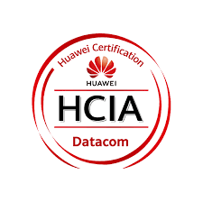
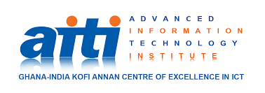

Work
Experience
May - Aug 2023
Intern, GhanaCARES Delivery Unit - MoCD.
Contributed to the DigSMART initiative by analyzing data from 170 participants,
which informed decision-making.
Engaged with participants to boost attendance while managing email communications.
Supported facilitators from Panoply Digital, collaborated with the Tony Blair Institute for Global Change and
the Ghana-India Kofi Annan Centre of Excellence in ICT to ensure smooth logistics,
and addressed feedback from personnel.
Oct 2018 - Apr 2019
Quality Assurance Intern, Npontu Technologies Ltd.
Conducted testing on proprietary desktop and web applications for clients to identify and resolve errors.
Reported application issues to the development team for quick resolution.
Participated in client presentations to communicate project progress.
Prepared user manuals and requirements documentation.
2018 - Present
Volunteer, Exhibition Assemblies of God (EXAG).
Delivered preparatory classes to younger members, facilitating their readiness
for the Basic Education Certificate Examination (BECE).
Took responsibility for setting up, organizing, and overseeing audio technical
equipment for church events.
Collaborated with team members to complete tasks, in order
to deliver high-quality sound experiences during live services.
Education
2020 - 2024
BSc. Computer Science, Regent University College of Science and Technology (RUCST).
Currently pursuing a Bachelor of Science in Computer Science.
My studies have equipped me with a solid foundation in programming, software development, and
computer systems, preparing me for a successful career in the technology sector.
2013 - 2016
General Science, Accra Academy.
Completed a General Science program at Accra Academy.
This experience provided me with a foundation in various scientific disciplines,
including biology, chemistry, and physics.
Skills
Summary
- Effective analytical and communication skills.
- Understanding of online privacy, cybersecurity principles, and best practices.
- Aptitude for quickly learning new technologies.
- Familiarity with digital communication technologies as well as Email Etiquette.
- Coding (Django - Python, HTML, CSS, JS).
- Technical understanding in data communication networks.
Certifications
-

2024 - 2027
HCIA Datacom
(Huawei) -

2017
Fundamentals of Software Development
(GI-KACE)